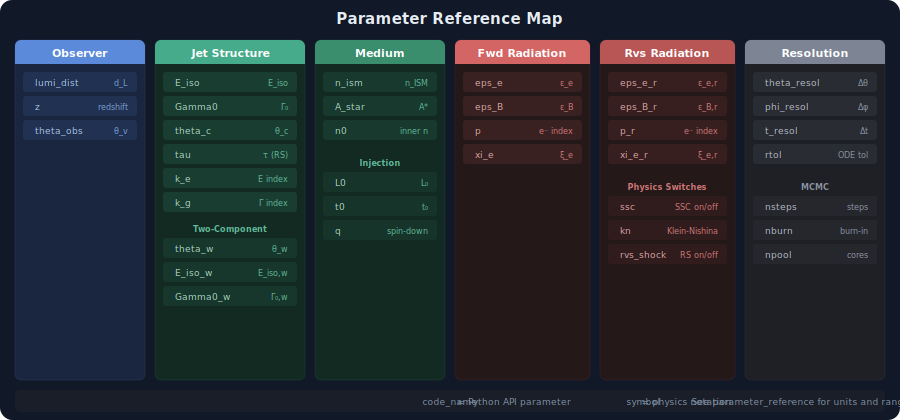

Parameter Reference
This page provides a comprehensive reference for all parameters used in VegasAfterglow, including their physical meanings, typical ranges, and units. All parameters listed here are available in the code and can be set via Python interfaces.
{kind=link}
Physical Parameters
Observer Parameters
Parameter |
Symbol |
Units |
Typical Range |
Description |
|---|---|---|---|---|
|
\(d_L\) |
cm |
\(10^{26} - 10^{29}\) |
Luminosity distance to the source |
|
\(z\) |
dimensionless |
\(0.01 - 10\) |
Cosmological redshift |
|
\(\theta_v\) |
radians |
\(0 - \pi/2\) |
Viewing angle (angle between jet axis and line of sight) |
Jet Structure Parameters
Parameter |
Symbol |
Units |
Typical Range |
Description |
|---|---|---|---|---|
|
\(E_{\rm iso}\) |
erg |
\(10^{50} - 10^{54}\) |
Isotropic-equivalent kinetic energy of the jet |
|
\(\Gamma_0\) |
dimensionless |
\(10 - 1000\) |
Initial bulk Lorentz factor of the jet |
|
\(\theta_c\) |
radians |
\(0.01 - 0.5\) |
Half-opening angle of the jet core |
|
\(\tau\) |
seconds |
\(0.1 - 1000\) |
Duration of energy injection (affects reverse shock) |
|
\(k_e\) |
dimensionless |
\(1 - 10\) |
Energy power-law index for structured jets (PowerLawJet only) |
|
\(k_g\) |
dimensionless |
\(1 - 10\) |
Lorentz factor power-law index for structured jets (PowerLawJet only) |
Two-Component Jet Parameters
Parameter |
Symbol |
Units |
Typical Range |
Description |
|---|---|---|---|---|
|
\(\theta_w\) |
radians |
\(0.1 - 0.5\) |
Half-opening angle of wide component |
|
\(E_{\rm iso,w}\) |
erg |
\(10^{50} - 10^{53}\) |
Isotropic energy of wide component |
|
\(\Gamma_{0,w}\) |
dimensionless |
\(10 - 300\) |
Initial Lorentz factor of wide component |
Ambient Medium Parameters
Parameter |
Symbol |
Units |
Typical Range |
Description |
|---|---|---|---|---|
|
\(n_{\rm ISM}\) |
cm⁻³ |
\(10^{-4} - 10^{3}\) |
Number density of uniform ISM |
|
\(n0\) |
cm⁻³ |
\(10^{-4} - 10^{6}\) |
Inner region number density for wind medium |
|
\(A_*\) |
dimensionless |
\(10^{-3} - 10\) |
Wind parameter: \(\rho = A_* \times 5 \times 10^{11} r^{-2}\) g/cm³ |
Forward Shock Radiation Parameters
Parameter |
Symbol |
Units |
Typical Range |
Description |
|---|---|---|---|---|
|
\(\epsilon_e\) |
dimensionless |
\(10^{-3} - 0.5\) |
Fraction of shock energy in relativistic electrons |
|
\(\epsilon_B\) |
dimensionless |
\(10^{-6} - 0.5\) |
Fraction of shock energy in magnetic field |
|
\(p\) |
dimensionless |
\(2.01 - 3.5\) |
Power-law index of electron energy distribution |
|
\(\xi_e\) |
dimensionless |
\(10^{-3} - 1\) |
Fraction of electrons that are accelerated |
Reverse Shock Radiation Parameters
Parameter |
Symbol |
Units |
Typical Range |
Description |
|---|---|---|---|---|
|
\(\epsilon_{e,r}\) |
dimensionless |
\(10^{-3} - 0.5\) |
Reverse shock fraction of energy in electrons |
|
\(\epsilon_{B,r}\) |
dimensionless |
\(10^{-6} - 0.5\) |
Reverse shock fraction of energy in magnetic field |
|
\(p_r\) |
dimensionless |
\(2.01 - 3.5\) |
Reverse shock electron energy distribution index |
|
\(\xi_{e,r}\) |
dimensionless |
\(10^{-3} - 1\) |
Reverse shock electron acceleration fraction |
Energy Injection Parameters (Magnetar)
Parameter |
Symbol |
Units |
Typical Range |
Description |
|---|---|---|---|---|
|
\(L_0\) |
erg/s |
\(10^{44} - 10^{48}\) |
Magnetar luminosity at time t₀ |
|
\(t_0\) |
seconds |
\(10 - 10^4\) |
Characteristic magnetar spin-down timescale |
|
\(q\) |
dimensionless |
\(1 - 6\) |
Power-law index of spin-down: \(L(t) = L_0(1+t/t_0)^{-q}\) |
Model Configuration
Jet Types
Jet Type |
Description |
|---|---|
|
Uniform energy and Lorentz factor within opening angle |
|
Gaussian angular profile for energy and Lorentz factor |
|
Power-law angular dependence with indices k_e and k_g |
|
Two-component jet with narrow core and wide wing components |
|
Uniform core with sharp transition to power-law wing |
|
Generic ejecta with arbitrary angular profiles |
Medium Types
Medium Type |
Description |
|---|---|
|
Uniform interstellar medium with constant density n_ism |
|
Stellar wind medium with \(\rho \propto r^{-2}\) profile |
Physics Switches
Parameter |
Default |
Description |
|---|---|---|
|
false |
Include reverse shock emission |
|
false |
Include forward shock synchrotron self-Compton |
|
false |
Include reverse shock synchrotron self-Compton |
|
false |
Use Klein-Nishina cross-section for IC scattering |
|
false |
Include magnetar energy injection |
Computational Parameters
Grid Resolution
Parameter |
Default |
Units |
Description |
|---|---|---|---|
|
0.15 |
points/degree |
Angular resolution in azimuthal direction |
|
0.5 |
points/degree |
Angular resolution in polar direction |
|
10.0 |
points/decade |
Temporal resolution (logarithmic spacing) |
Numerical Parameters
Parameter |
Default |
Description |
|---|---|---|
|
1e-6 |
Relative tolerance for numerical integration |
MCMC Parameters
Parameter |
Typical Value |
Description |
|---|---|---|
|
1000-50000 |
Total number of MCMC steps per walker |
|
0.2-0.5 |
Fraction of steps to discard as burn-in |
|
1-10 |
Thinning factor (keep every nth sample) |
|
2×n_params to 10×n_params |
Number of ensemble walkers |
Parameter Scaling Types
Scale Type |
Description and Usage |
|---|---|
|
Sample in log₁₀ space. Use for parameters spanning multiple orders of magnitude (energies, densities, microphysics parameters) |
|
Sample in linear space. Use for parameters with limited ranges (angles, power-law indices) |
|
Keep parameter fixed at initial value. Use when you don’t want to vary a parameter |
Parameter Relationships and Constraints
Physical Constraints
Energy Conservation:
\(E_{\rm iso}\) should be consistent with the kinetic energy available from the central engine
Causality:
Light travel time sets minimum variability timescale: \(\delta t \geq R/c\Gamma^2\)
Jet opening angle and Lorentz factor: \(\theta_c \gtrsim 1/\Gamma_0\) for causal contact
Microphysics:
Energy fractions: \(\epsilon_e + \epsilon_B \leq 1\) (though often \(\ll 1\))
Electron power-law index: \(p > 2\) for finite energy in fast-cooling regime
Unit System and Physical Constants
VegasAfterglow uses a normalized unit system defined in macros.h:
Base Units: - Length: \(l_0 = 1.5 \times 10^{13}\) cm - Time: \(t_0 = l_0/c = 500\) s - Mass: \(m_0 = 2 \times 10^{33}\) g
Physical Constants (code units): - Speed of light: \(c = 1\) - Proton mass: \(m_p = 1.67 \times 10^{-24}\) g - Electron mass: \(m_e = m_p/1836\) - Thomson cross-section: \(\sigma_T = 6.65 \times 10^{-25}\) cm²
Cosmological Parameters: - \(\Omega_m = 0.27\) (matter density) - \(\Omega_\Lambda = 0.73\) (dark energy density) - \(H_0 = 67.66\) km/s/Mpc (Hubble constant)
Common Unit Conversions
Distance: - 1 Mpc = 3.086 × 10²⁴ cm - 1 kpc = 3.086 × 10²¹ cm - 1 AU = 1.5 × 10¹³ cm
Energy: - 1 erg = 1 g⋅cm²/s² - 1 keV = 1.602 × 10⁻⁹ erg - 1 GeV = 1.602 × 10⁻³ erg
Angles: - 1 degree = π/180 ≈ 0.01745 radians - 1 arcminute = π/10800 ≈ 2.91 × 10⁻⁴ radians
Parameter Degeneracies and Fitting Strategies
Understanding parameter correlations helps in MCMC fitting:
Strong Correlations:
\(E_{\rm iso}\) ↔ \(n_{\rm ISM}\): Higher energy can compensate for lower density
\(\epsilon_e\) ↔ \(\epsilon_B\): Microphysics parameters are often correlated
\(\theta_c\) ↔ \(\theta_v\): Jet geometry parameters affect observed flux similarly
Frequency-dependent Constraints:
Radio data: Most sensitive to \(\epsilon_B\), \(n_{\rm ISM}\)
Optical data: Constrains \(\epsilon_e\), \(p\), \(E_{\rm iso}\)
X-ray data: Sensitive to \(\Gamma_0\), high-frequency cutoffs
Time-dependent Constraints:
Early times (< 1 day): Constrain \(\Gamma_0\), \(\epsilon_e\)
Jet break time: Determines \(\theta_c\), \(E_{\rm iso}\)
Late times (> 100 days): Sensitive to \(n_{\rm ISM}\), \(p\)
For more detailed information on parameter estimation strategies and examples of using these parameters in practice, see the Examples and MCMC Parameter Fitting pages.